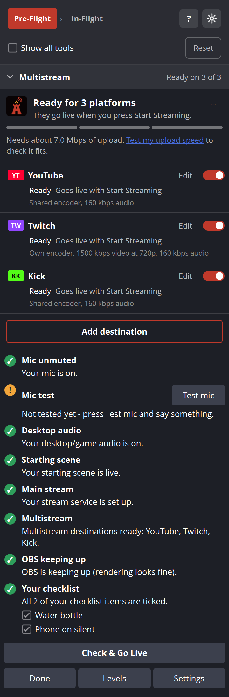
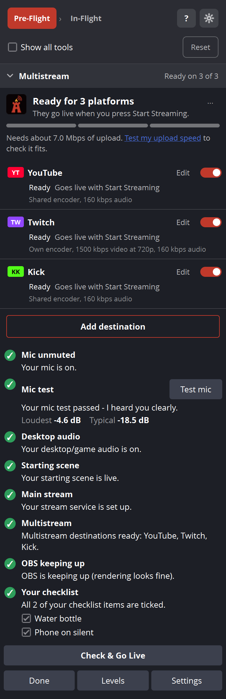
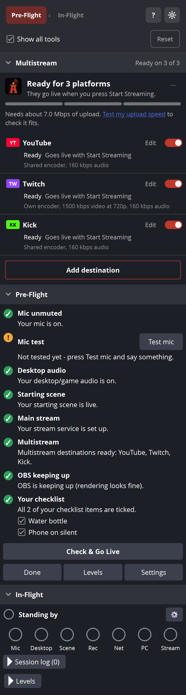
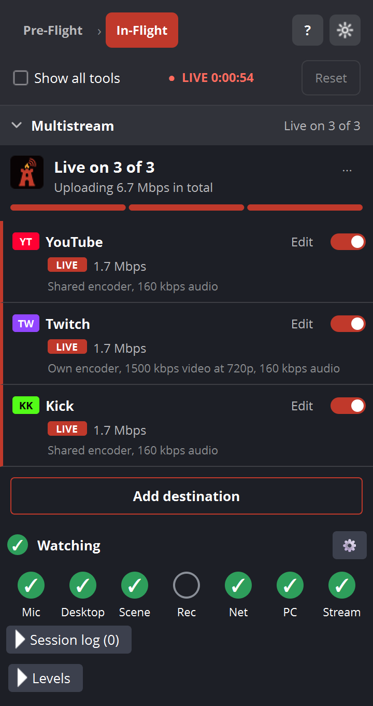
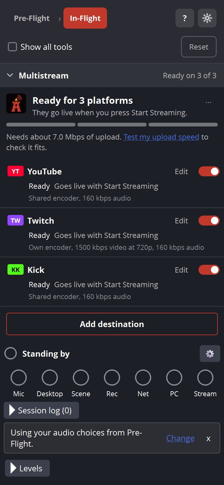
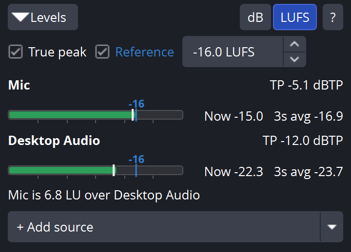
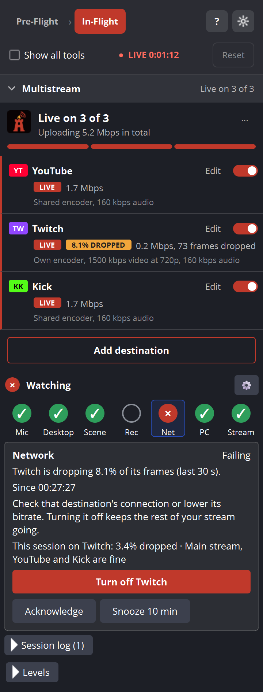
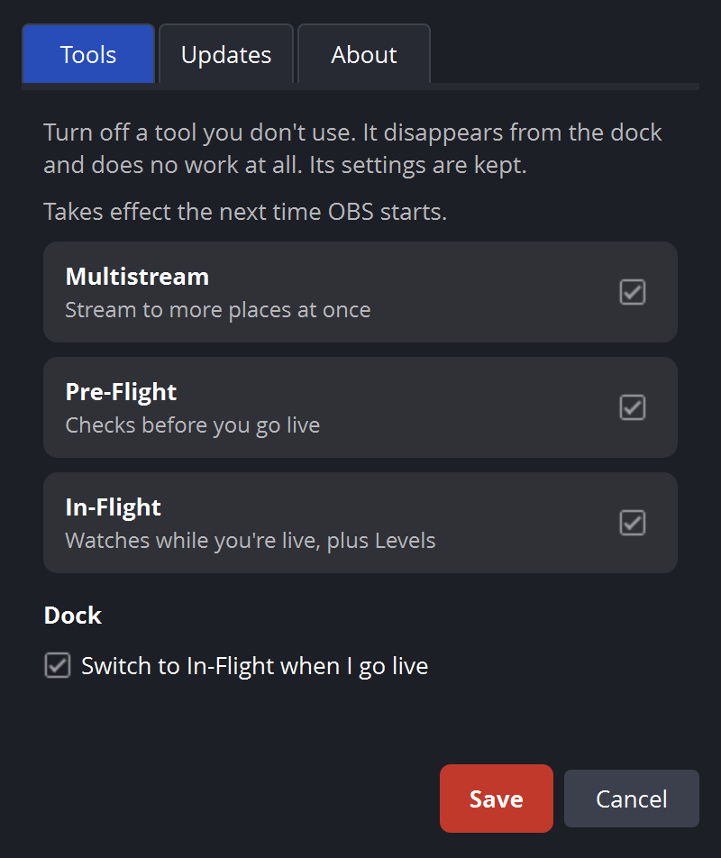

Get started
Red Warden Stream Kit is a plugin for OBS Studio. It puts three tools in one dock named RW Stream Kit: Multistream, Pre-Flight and In-Flight. It needs OBS Studio 31.1 or newer on 64-bit Windows.
Install with the installer
- Close OBS.
- Run
RedWardenStreamKit-<version>-Setup.exe. - Start OBS.
- Open the Docks menu and choose RW Stream Kit.
The first time, the Kit puts the dock in the right-hand area. If OBS already has a saved place for the dock, the Kit leaves it there. You can drag it anywhere afterward.
Install from the zip
- Close OBS.
- If you have Kit 1.0.x or the standalone Multistream, delete the
rws-multistream,rws-preflightandrws-inflightfolders fromC:\ProgramData\obs-studio\plugins\. The Kit replaces them. - Do not delete OBS's
plugin_configfolder. It holds your settings. - Copy the
rws-stream-kitfolder intoC:\ProgramData\obs-studio\plugins\. Create thepluginsfolder if it does not exist. For a portable OBS, use that copy's ownpluginsfolder. - Start OBS and open Docks > RW Stream Kit.
Do not leave old tool folders beside the new one.
Upgrading from Kit 1.0.x
Kit 1.0.x had two separate docks (Multistream and Pre-Flight). In 1.1.0 they become one dock, and In-Flight is new. Your destinations, stream keys, reports, hotkeys and settings carry over. Run the new installer over the old install. The installer removes the files of the older plugins it replaces and touches nothing else.
Your first stream
- Click Add destination and add each place you stream to. See Multistream.
- In the Pre-Flight stage, click Set up Pre-Flight and tell it how you stream. See Pre-Flight.
- Click Check & Go Live.
- The dock switches to In-Flight by itself when you go live. See In-Flight.
The dock
The dock shows one stage at a time. The stage strip at the top has Pre-Flight and In-Flight. A stage appears in the strip only if its tool is on. Multistream stays pinned above whichever stage you are looking at.

Stage changes
- When the stream goes live, the dock switches to In-Flight. Turn this off with Switch to In-Flight when I go live in the Kit settings.
- Clicking Done in Pre-Flight switches to In-Flight and stands by. It does nothing while you are live or if In-Flight is off.
- Click a stage in the strip to look at it. This is only a peek. The next time the stream goes live, the dock moves to In-Flight again.
- The Kit counts a stream as ended only after OBS's stream and every Multistream destination have all been off the air for 10 seconds in a row. A short drop and reconnect does not end the session.
Controls at the top
- Show all tools: stacks every tool in one list instead of one stage at a time. In this view Pre-Flight and In-Flight each get a header you can collapse.
- Reset: starts fresh. It clears the Pre-Flight checks and the In-Flight session log. Your settings stay. It is disabled while a stream session is active and works whenever none is, including before your first stream.
- ?: opens this manual.
- The gear: opens Kit settings. See Settings.
- While live, the strip shows LIVE and a running time such as
LIVE 0:42:10.
The Multistream section is collapsible, and the Kit remembers whether you collapsed it.
After the stream
This card is part of In-Flight, so it does not appear if In-Flight is switched off. When the stream ends, a Stream ended card shows how long you were on air and how many entries are in the session log. Click Start fresh for the next stream to clear the session log and the Pre-Flight checks. Your settings stay.
Needs attention
When In-Flight has a red light you have not acknowledged or snoozed, the dock title shows a dot before its name. The taskbar button flashes once for about 3 seconds for each new red light.
Multistream
Multistream sends your one OBS stream to more than one place. Each place is a destination. Each destination whose switch is on goes live when you press OBS's Start Streaming. A destination that is switched off is skipped.
Add a destination
- Click Add destination.
- Pick a Platform: Twitch, YouTube, Kick, TikTok Live, Facebook Live, Rumble, X or Custom RTMP. The server and key boxes show hints for that platform.
- Give it a Name, a Server URL and a Stream key. The URL must start with
rtmp://orrtmps://. SRT is not supported. - Choose the encoding, then save.
Stream keys are stored in Windows Credential Manager, not in a settings file. When you edit a destination that has a saved key, leave the key box blank to keep it. Remove deletes the destination and its saved key.
Do not paste the key into the server URL. The Kit refuses a key that is part of the URL.
New destinations are on. Imported ones are off until you switch them on.
Encoding
- Share OBS's stream encoder (recommended): no extra GPU or CPU load.
- Separate encoder for this destination: choose an Encoder, Video bitrate, Resolution, Audio bitrate and Audio track for this one destination.
The Kit reads OBS's service list and shows advice when your settings are outside a platform's limits for bitrate, keyframe interval, height, frame rate or audio. If the shared encoder's keyframe interval is 0 or above 4, you will see: set Keyframe Interval to 2 s in OBS Settings > Output > Streaming.
What a card tells you
| Status | Meaning |
|---|---|
| Ready | Goes live with Start Streaming (when its switch is on). |
| Off | The destination's switch is off. It is skipped. |
| Waiting | It joins as soon as OBS's stream is sending video. It waits up to 20 seconds. |
| Connecting | Opening the connection. |
| Connected | Waiting for a keyframe from OBS. |
| LIVE | Sending. The card shows the rate in Mbps and any dropped frames. |
| Reconnecting | The connection dropped. Attempt N of 10. |
| Retrying in m:ss | Waiting for the next try. A Retry button tries now. |
| Paused | Protecting your platform account from too many connections. The card shows when the next try is. |
| Stopping | Closing the connection. |
If a platform rejects the key or the URL is bad, the Kit does not keep retrying. The card says to check the destination's settings with Edit.
A badge such as 0.5% DROPPED appears on a live card when that destination is losing frames.
Reconnects and the connection budget
If a live destination drops, the Kit retries it on its own. The first tries come at 5, 10, 20 and 40 seconds, then every 60 seconds, for 10 tries. After that it slows down to 30 seconds, 60 seconds, then every 2 minutes. Each wait varies by up to 20% so retries do not bunch up. If a destination sends no data for 6 seconds (20 seconds before its first frame), the Kit restarts it.
Platforms can block an account that connects too often. So each destination has a budget: 12 attempts in 10 minutes and 40 in an hour. Every attempt counts: the first connect, reconnects, restarts, the Retry button and the Twitch bandwidth test. If a destination stalls 3 times in 10 minutes, retries slow to at least 5 minutes apart. The budget always wins over the schedule, and it is remembered until you close OBS, even if you stop and start the stream. When the budget runs out the card shows Paused with a countdown.
Pressing Stop Streaming in OBS cancels all pending retries.
Upload speed
Open the ... menu on the Multistream header for upload-speed tools.
- Test my upload speed: asks first, then measures for about 10 seconds against Cloudflare's speed server. It cannot run while you are live.
- Enter my upload speed...: type a number from 0.5 to 100000 Mbps if you already know it.
- Forget my upload speed: clears it.
With a speed saved, the header shows how much upload your destinations need, with about 5% overhead added. The note turns amber above 75% of your speed, because streams start dropping frames above about that point. It turns red above 90%: that is more than your connection can reliably carry. Turn a platform off or lower its bitrate.
Twitch bandwidth test
In a Twitch destination, Test bandwidth without going live opens the Twitch bandwidth test dialog. It runs for about 20 seconds with Twitch's test mode, so nothing goes on air. Use Test again or Stop test. The test counts toward the connection budget.
Stream report
After a stream, the Multistream section shows a one-line recap that starts with "Last stream:" and a See report link. The Stream report dialog has Copy report and Open past reports. The Kit keeps the last 50 reports. You can also open the latest from the ... menu with Last stream report.
Import from another plugin
Choose Import from obs-multi-rtmp or Aitum... from the ... menu. An empty dock also offers this if it finds saved destinations. The Import destinations dialog lists what it found. Only RTMP targets come across. SRT targets are skipped. Imported destinations are off.
Where it is saved
Destinations are saved per OBS profile, in rws-multistream.json inside the profile folder. Your upload speed and past reports are in OBS's plugin_config\rws-multistream folder.
Pre-Flight
Pre-Flight checks your setup before you go live. Each check has a light. Green means fine. Amber means look at it. Red means it will probably hurt your stream. A grey ? means Pre-Flight cannot tell yet.

Set it up
The first time, a card says Pre-Flight checks your setup before you go live. Click Set up Pre-Flight. Later you can change everything with Settings in the dock. The Pre-Flight settings dialog asks:
- How do you stream? OBS's normal Stream button, Red Warden Multistream, or both.
- Microphone and Desktop / game audio.
- Starting scene.
- I record my streams.
- Checks to run: eight on/off switches.
- Your checklist: your own items. Use Add and Remove.
- Tell me when an update is available.
The checks
| Check | What it looks at |
|---|---|
| Mic unmuted | Amber if no mic is chosen. Red if the mic is missing, is not an audio source, or is muted. Green: "Your mic is on." |
| Mic test | You press Test mic and talk. See below. |
| Desktop audio | Shown only if you chose a source. Amber if it is missing. Red if it is muted. |
| Starting scene | Amber if none is chosen or the scene is gone. Red if a different scene is live. Green if your starting scene is live. In Studio Mode it checks the program scene. |
| Main stream | Whether OBS's own stream settings are complete. Red if the service is not fully set up or there is no server. Amber if there is no key. |
| Multistream | Amber if Multistream is not installed or found. Red if no destination is on. Green names the destinations that will go live. |
| Recording | Only if you ticked I record my streams. Red if the folder is missing, not writable or has under 5 GB free. Amber under 20 GB free, or if OBS is not set to record automatically when streaming. |
| OBS keeping up | Watches OBS for 30 seconds. Before you are live it looks at rendering. While live it also looks at encoding and the network. It shows the worst one. Amber above 0.5% dropped or late frames, red above 2%. |
| Your checklist | Red until you tick every item. Green when all are ticked. Ticks reset when the stream stops. |
Mic test
Press Test mic. The button reads Listening... say something for 5 seconds. Talk at your normal volume. The test passes if your loudest moment is louder than -30 dB and clearly above the room noise. It then shows two numbers:
- Loudest: your highest peak, for example
-8.2 dB. - Typical: the average level of the sound that was not silence.
A silent mic reads -inf. The result clears when you press Reset, when the stream stops, when you change scene collection and when you pick another mic.
Going live
- Check & Go Live runs the checks and starts the stream. While you are live it reads Live and is disabled.
- If something is red, a Some checks failed window lists the failures and "Also worth a look". Choose Go live anyway or Cancel. Cancel is the default.
- Pre-Flight never blocks OBS's own Start Streaming button. If you use it with red checks, a banner says "You went live with problems" and names them. You can dismiss it.
- Done: you finished checking. The dock switches to In-Flight and stands by.
- Levels: shows or hides the level meters so you can check your mic and sound before you go live. See Levels.
- Settings: opens the Pre-Flight settings.

Pre-Flight reads Multistream directly inside OBS. It makes no network connections of its own.
In-Flight
In-Flight watches your stream while you are live. It shows seven lights and a status line. It is live when OBS is streaming, or when any Multistream destination is live or reconnecting.

Status line
- Standing by: you are off the air.
- Watching: you are live.
- Checking...: it cannot tell yet.
- Stream dropped: OBS's stream stopped with an error.
The lights
Each light is a circle you can click for details.
- Green: fine.
- Amber: check soon.
- Red: failing.
- Dashed ring: can't tell yet.
- Grey ring: off.
| Light | What it watches |
|---|---|
| Mic | Red at once if the mic is inactive, missing or not an audio source. If it is muted, amber after 20 seconds and red after 60 seconds. If it has had no data for 5 seconds, it shows unknown. Optional: amber when it is very quiet (see Settings). |
| Desktop (Desktop audio) | Red if the source is missing or muted. Amber after 120 seconds of digital silence. |
| Scene | Watches your holding scenes, such as a "be right back" screen. Amber when you stay on one past its time limit. Red 5 minutes after that. Grey if you set none. |
| Rec (Recording) | Grey and "Turned off" if you do not record. Red if recording has not started within 60 seconds of going live, or if it stopped. Amber if paused. |
| Net (Network) | Dropped frames on the main stream and on each Multistream destination. See Network light. |
| PC (PC keeping up) | Late frames from rendering and skipped frames from the encoder, over the last 30 seconds. Amber above 0.5%, red above 2%. It reads "Still measuring your PC" while it fills its window. |
| Stream | Green while OBS's own stream is active. If OBS reports an error code when the stream stops, this light stays red with "Stream dropped (code ...)" until you acknowledge it or a new session starts. |
A bad light clears only after it has been fine for 10 seconds. That stops flicker.
When a light goes red
A new red light flashes once. You can also turn on a sound in the settings. Click the light to see what is wrong, when it began ("Since hh:mm:ss") and what to try. Then:
- Acknowledge: you saw it. The badge shows it as acknowledged. A latched stream drop clears.
- Snooze 10 min: dims the light and holds back the flash for 10 minutes.
Session log
Click Session log (N) to open it. It holds up to 200 lines like hh:mm:ss Light started what. The action word is started, got worse, ended or acknowledged. Reset clears it. The log covers the current session only, and there is no copy or export button, so note down anything you need before you press Reset.
Set it up
The first time, a card says In-Flight watches your stream while you are live and asks you to choose your microphone and scenes. Pick one:
- Copy my choices from Pre-Flight
- Choose by hand...
- Set up later
When Pre-Flight is already set up, In-Flight uses its audio choices automatically and shows the note Using your audio choices from Pre-Flight. Change opens In-Flight settings, and x hides the note.

The gear on the In-Flight panel opens In-Flight settings. See Settings.
Levels
Levels shows live meters for your mic, desktop audio and any other sources you add. Open it with the Levels button in Pre-Flight, or with the Levels header in In-Flight. It starts collapsed. The meters only run while the section is open and on screen, so a closed Levels panel costs nothing.

dB mode
The bar runs from -60 to 0 dBFS. The fill shows the instant peak. It is green up to -12, amber above -12 and red above -3. A short marker holds the highest peak for 1.5 seconds. Peak is the recent peak. Avg is a smoothed average over about 0.3 seconds. Silence reads -inf.
LUFS mode
LUFS is loudness as people hear it. Switch with the dB / LUFS buttons.
- Now: the last 0.4 seconds.
- 3s avg: the last 3 seconds. It shows
--until it has enough audio. - True peak (off by default): adds
TP x dBTPfor each source. Keep it below -1 dBTP. - Reference (off by default): draws a line at a level you choose, from -60 to 0 LUFS. It starts at -16. The Kit never suggests a target. Pick the one your platform or your show uses.
Comparing sources
Lines under the meters compare each source to your mic, for example "Mic/Aux is 6.1 LU over Desktop Audio". They say "level with" when close and "is silent" for a silent source. In dB mode they use dB. In LUFS mode they use LU.
Add and remove sources
Your mic and desktop rows are always shown. Use + Add source to add another audio source. Use the x button on a row (Remove this source from the Levels panel) to take it off. The Kit remembers the mode, the options and the sources.
The ? next to the switch opens this section.
Network light
The Net light judges the main OBS stream and every Multistream destination separately. Each output has its own 30-second window of dropped frames. One bad destination does not hide a good one, and one good one does not hide a bad one.

- A destination that is reconnecting is amber. It is not judged for drops while it reconnects.
- A destination that drops more than 0.5% of its frames is amber. More than 2% is red. You can change both numbers in Advanced in the In-Flight settings.
- The light shows the worst output. Red beats amber. Reconnecting beats dropping. After that, the higher percentage wins.
- While an output is still measuring and nothing is bad, the light is unknown and the details say it is still measuring the connection.
Click the light for details. You will see which output is the problem, how much it has dropped, the fix text, and a line such as "Main stream and YouTube are fine". If the worst problem is a Multistream destination, a Turn off button for it appears. Use it to drop that destination and keep the rest of the stream going. The incident ends at once and the session log says "ended (turned off)".
The Multistream cards also show a DROPPED badge with the percentage on the destination that is losing frames.
Settings
There are three places for settings. Kit settings is the gear at the top of the dock. Pre-Flight settings is the Settings button in Pre-Flight. In-Flight settings is the gear on the In-Flight panel.
Kit settings
Click the gear. The window is named "Red Warden Stream Kit - Settings". It has three pages. Click Save to keep changes.

- Tools: turn off a tool you do not use. An off tool disappears from the dock and does no work at all. Its settings are kept. This takes effect the next time OBS starts. You can switch a tool off only after the stream ends. Here you also find Switch to In-Flight when I go live, which is on by default.
- Updates: Tell me when an update is available. See Updates.
- About: version and a link to the Kit page.
In-Flight settings
- What to watch: Microphone, Desktop / game audio, I record my streams, and how soon recording must start after you go live (10 to 600 seconds, default 60).
- Holding scenes: click Add a scene. Give each a label (up to 40 characters) and a limit in minutes (1 to 120, default 5).
- Lights: seven check boxes. Clear one to switch that light off.
- Advanced: the numbers behind the lights.
| Advanced setting | Range | Default |
|---|---|---|
| Mic muted: amber after | 5 to 600 s | 20 s |
| Mic muted: red after | 10 to 1800 s (at least 5 s after amber) | 60 s |
| Warn when my mic is very quiet | 30 to 1800 s, level -80 to -20 dBFS | Off. When on: 90 s below -50 dBFS |
| Desktop audio silence | 30 to 1800 s | 120 s |
| Scene extra time before red | 1 to 60 min | 5 min |
| Dropped frames: warn | 0.1 to 10% | 0.5% |
| Dropped frames: fail | 0.2 to 50% (at least 0.1 above warn) | 2.0% |
| Play a sound on a new red light | On or off | Off (system beep) |
| Check for Stream Kit updates | On or off | On (same switch as in Kit settings) |
The quiet-mic warning only starts after the mic has been heard once this session. It never fires while the mic is muted or while you are on a holding scene. If you type a number outside a range, the Kit adjusts it and shows a note.
Where settings are kept
All of these are in OBS's plugin_config folder, plus one file in each OBS profile:
rws-stream-kit\settings.json: Kit settings.rws-multistream: upload speed, hotkey bindings and reports. Destinations are inrws-multistream.jsoninside the OBS profile.rws-preflight\settings.json: Pre-Flight settings.rws-inflight\settings.json: In-Flight settings, including Levels.
The older folder names stay the same on purpose, so a Kit 1.0.x upgrade keeps everything.
Hotkeys
Multistream adds hotkeys. Set them in OBS under Settings > Hotkeys. Look for the names that start with "Red Warden Multistream":
- Red Warden Multistream: turn all destinations on
- Red Warden Multistream: turn all destinations off
- Red Warden Multistream: toggle followed by a destination's name. There is one for each destination.
A hotkey acts when you press it. Holding it does nothing more. Pre-Flight and In-Flight have no hotkeys.
If you switch Multistream off in the Kit settings, its hotkeys are gone after the next OBS start.
Automation
Stream Deck
You can toggle destinations from a Stream Deck in two ways.
- Use the Hotkey action in the Stream Deck software and send one of the hotkeys above. Set the same key combination in OBS first.
- Use Elgato's OBS plugin for Stream Deck, which talks to OBS over obs-websocket. Use it with the vendor requests below if it can send custom requests.
obs-websocket vendor requests
If OBS's obs-websocket is available, Multistream registers a vendor named RedWardenMultistream. Call it with CallVendorRequest. It is for outside tools only. The Kit itself never uses it.
| Request | Data | Result |
|---|---|---|
GetDestinations | none | destinations: a list with id, name, platform, enabled, state and kbps for each. Also ok. |
SetDestination | destination (id or name), enabled | Turns that destination on or off. |
ToggleDestination | destination (id or name) | Flips that destination. |
SetAllDestinations | enabled | Turns every destination on or off. |
The vendor also sends a DestinationChanged event when a destination changes. Names are matched without regard to case.
{
"vendorName": "RedWardenMultistream",
"requestType": "SetDestination",
"requestData": { "destination": "YouTube", "enabled": true }
}Errors you may see: requestData.destination (id or name) is required and no destination with that id or name. If OBS does not answer within 3 seconds, the reply says so and the change may still apply.
Updates
Once each time OBS starts, about 15 seconds after the dock loads, the Kit asks redwardenstudios.com whether a newer version exists. If one does, a one-line notice appears in the dock with a Download link and Not now. Either one hides the notice until the next OBS start.
If the newer version needs a newer OBS than you have, the notice says which OBS version to get first and offers Details instead.
The Kit never downloads or installs anything by itself. To turn the check off, clear Tell me when an update is available in the Kit settings, on the Updates page.
Privacy
- Update check: one plain web request to redwardenstudios.com each time OBS starts. It sends no request body; the Kit version is in the User-Agent. Like any web request, it lets the server see ordinary connection details such as your IP address. You can turn it off.
- Upload speed test: talks to Cloudflare's speed server, only when you press Test my upload speed.
- Twitch bandwidth test: talks to Twitch, only when you press Test bandwidth without going live.
- Your streams: Multistream sends video only to the destinations you add.
- Stream keys are stored in Windows Credential Manager. Settings files do not hold them.
- Pre-Flight and In-Flight make no connections of their own.
Troubleshooting
I do not see the RW Stream Kit dock
- Open Docks in OBS and look for RW Stream Kit. Tick it if it is there but hidden.
- Check that you run OBS Studio 31.1 or newer, 64-bit.
- With a zip install, check that the folder is
C:\ProgramData\obs-studio\plugins\rws-stream-kitand that no oldrws-multistream,rws-preflightorrws-inflightfolder is beside it. - The dock may be there but tiny. Drag its edge, or float it.
A tool is missing from the dock
It is probably off. Open the gear, then Tools, and tick it. Restart OBS. Its settings are still there.
I cannot switch a tool off
You can switch a tool off only after the stream ends. The Kit refuses while you are live or while any Multistream destination is active.
Reset is greyed out
Reset works whenever no stream session is active, including before your first stream. It is off while a session is active. A session ends only after OBS's stream and every Multistream destination have been off the air for 10 seconds.
The dock did not switch to In-Flight
Check that Switch to In-Flight when I go live is on and that In-Flight is on. If you clicked a stage in the strip earlier, the dock follows the stream again the next time you go live.
A light is stuck amber or red
- A light clears only after it has been fine for 10 seconds.
- Scene: you are on a holding scene past its limit. Change scene or raise the limit in Holding scenes.
- Mic: unmute it. Amber and red timers start from when it was muted.
- Net: click the light. It names the output and the percentage. See Network light.
- Stream: after a drop with an error code the light stays red until you press Acknowledge.
- A light you snoozed with Snooze 10 min is only dimmed. The problem is still there.
A light is a dashed ring
The Kit cannot tell yet. The Net and PC lights need about 30 seconds of video after you go live, and enough frames to judge. On a stalled stream that can take longer. A mic with no meter data for 5 seconds also shows this.
A destination is not reconnecting
- If the card says Paused or shows a countdown, the connection budget is in charge. See Reconnects and the connection budget. The Kit protects your platform account from too many connections. Wait for the time on the card.
- If the card says to check the destination's settings, the platform rejected the key or the URL is bad. Click Edit, fix it and save.
- If you pressed Stop Streaming in OBS, pending retries are cancelled on purpose.
- The Twitch bandwidth test and the Retry button also use up attempts.
A destination stays on Waiting
It waits up to 20 seconds for OBS's stream to send video. Check that OBS is actually streaming and that your scene has video.
The upload test does not run
It cannot run while you are live. Stop the stream first, or type your speed with Enter my upload speed....
The ? button opened the website, not this manual
The installer puts the manual in the plugin's data folder (data\manual). If it is missing, ? opens the online manual. Use the web manual, or reinstall with the latest installer.
I have two docks, or old docks
You still have an older plugin installed. Run the Kit installer again, or remove the old rws-multistream, rws-preflight and rws-inflight folders from the plugins folder, and restart OBS.
The mic test says my mic is too quiet
Move closer, raise the gain, and press Test mic again. To pass, your loudest moment must be above -30 dB and well above your room noise.
Uninstall
Installed with the installer
- Close OBS.
- Open Windows Settings > Apps.
- Find Red Warden Stream Kit (OBS plugins) and choose Uninstall.
Installed from the zip
Close OBS and delete the rws-stream-kit folder from C:\ProgramData\obs-studio\plugins\.
The Kit's settings files are in OBS's plugin_config folder and your OBS profile. Stream keys are in Windows Credential Manager. To remove a key, press Remove on the destination before you uninstall.
About
Red Warden Stream Kit is free, open-source software, licensed GPL-2.0-or-later. You are free to use it, study it and share it under that license.
- Version: 1.1.0
- Source: github.com/Red-Warden-Studios/red-warden-stream-kit
- Made by Red Warden Studios. Product page: redwardenstudios.com/division/bastion/stream-kit
- Support: support@redwardenstudios.com
The "Red Warden" name and logo are trademarks of Red Warden Studios. The GPL does not cover them.